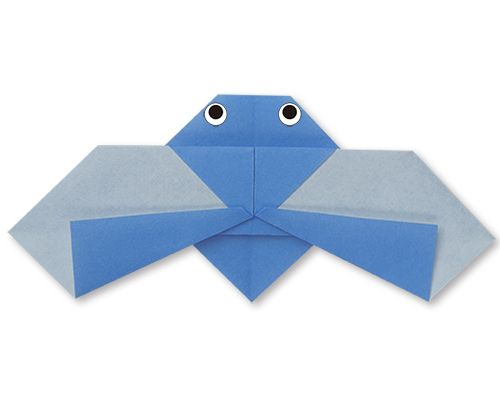

Origami Instructions and Diagrams
Step by Step diagrams are probably the most popular and easiest to follow way to show how to fold things out of paper.
Trying to find good origami instructions on the Internet can be a lot of work.
To help your search we've put together the largest database of free origami diagrams anywhere on the Internet

Camel
Interesting Facts about Camel
- Camel's ears are furry
- Camel can move easily across the sand because of its specially designed feet
- When they find water, they will drink as much as possible.

Chameleons
Interesting Facts about Chameleon
- Chameleons are reptiles that are part of the iguana suborder
- Changing skin color is an important part of communication among Chameleons
- Most Chameleons have a prehensile tail that they use to wrap around tree branches

Pigeons
Interesting facts about Piegons
- Pigeons have been present with humans since ages
- Pigeons have fought alongside humans in World War I and II
- Pigeons have excellent hearing abilities.

Teddy Bear
Interesting facts about Teddy Bears
- The official term for a teddy bear collector is an ‘arctophile’.
- The Oxford English Dictionary dates the first use of the term teddy bear to 1906.
- The first toy stuffed bear was created by German toymaker Margarete Steiff.

Panda
Interesting facts about Flying Panda
- Giant pandas are good at climbing trees and can also swim.
- Pandas go from pink to white and black
- An adult can eat 12–38 kilos of bamboo per day!

Flying Cicada
Interesting facts about Flying Cicada
- Cicadas can survive a huge fall as babies, or nymphs.
- Most have red-orange eyes. But occasionally cicadas have blue, white or grayish eyes.
- Females may be attracted to the sound of motors.